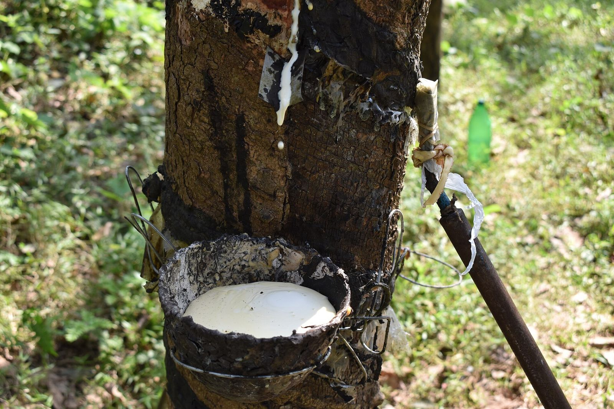

Promotionnelle · 3 min 29 · voix masculine
Hévéa : un nom et une parcelle par kilo
Le règlement européen au 30 décembre 2026, ce que l'usine va demander, et pourquoi il n'existe pas de certification EUDR.
GEC-CI rend traçables les coopératives, acheteurs de fonds de tasse et usines : registre des producteurs, géolocalisation, pesée, lots rattachés à leurs fournisseurs, preuves de légalité et d'absence de déforestation. Il n'existe pas de certification EUDR : nous préparons les preuves que l'usine exigera.
La ligne qui s'impose à tous est la loi ; la ligne qui arrive le plus vite par contrat est le règlement européen ; la seule ligne qui mène à un certificat de groupe de petits planteurs est FSC.

Voix off française, musique, texte affiché à l'écran : à partager avec votre conseil d'administration et vos équipes. Toutes les vidéos GEC-CI PRO
Le règlement européen au 30 décembre 2026, ce que l'usine va demander, et pourquoi il n'existe pas de certification EUDR.
Loi n° 2017-540, règlement européen, FSC ; le circuit d'un kilo de fonds de tasse et les points durs du terrain.

Des milliers de petits planteurs mélangés dès l'usine : sans lots rattachés, l'origine ne se prouve plus.
Ce sont souvent les métayers qui livrent : sans eux dans le système, le nom sur le bon n'est pas celui de la parcelle.
Géolocaliser sans vérifier les limites des forêts classées (SODEFOR) révèle un risque au lieu de le traiter.
Téléphones, agents, carburant, connexion, mise à jour annuelle, vérification des balances : à annoncer dès l'offre.
La même méthode pour les trois filières ; seul le référentiel change.
On ne mélange jamais une obligation légale et une recommandation : chaque point dit qui l'impose. Exemple de matrice GEC-CI à ajuster après diagnostic.
N1 : loi ivoirienne · UE : règlement européen sur la déforestation · N2 : standard (FSC si retenu) · N3 : acheteur · N4 : contrat · N5 : méthode GEC-CI · N6 : conseil. Il n'existe pas de certification EUDR.
Répondez honnêtement : rien n'est enregistré ni envoyé. Le résultat donne vos priorités ; il ne remplace pas le diagnostic sur place.

Registres incomplets, pas de responsable du système interne.

Organisation correcte, l'acheteur attend un premier audit.

Rainforest Alliance v1.4 ou RSPO 2024 : les écarts à combler.

Non-conformités majeures, certificat suspendu, conflit interne.

Cohérence des données entre sections, magasins et ponts-bascules.

Traçabilité, bilan massique, dossiers d'origine pour le règlement européen.
Personnages : illustrations créées pour GEC-CI, ils ne représentent pas des personnes réelles.
Personnages : illustrations créées pour GEC-CI, ils ne représentent pas des personnes réelles.
Le prix se calcule après le diagnostic. Les coûts de terrain (téléphones ou GPS, agents, carburant, connexion, mise à jour annuelle des données) sont annoncés dès l'offre : ils sont à la charge du client ou de l'usine.
Vos données restent à vous : elles sont hébergées dans votre espace et vous sont restituées en fin de contrat.
Producteurs, parcelles, pesées, achats, lots, transport, qualité, social, environnement : de la parcelle à l'usine.
Ouvrir la plateformeCartographie des référentiels, modèles clients, parcours, 16 formulaires de diagnostic, procédures et registres.
Lire le manuelClasseur Excel des registres et outils, présentation pour le conseil d'administration et l'usine : remis à chaque client.
Les demanderLe système de gestion du cabinet : clients, contrats, missions, preuves, validations humaines, incidents, facturation et journal d'audit. Un seul compte pour toutes les plateformes GEC-CI ; droits vérifiés par le serveur.
Ouvrir IA GECI
GEC-CI est dirigé par Mr SIDIBE ABDOULAYE, Président-Directeur Général, ATN RA et formateur-auditeur ISO 9001, 14001 et 45001. La direction suit chaque mission jusqu'à la décision écrite.


Portraits de bureau : décors mis en scène numériquement.
| Premier contact | Réponse le jour même, rendez-vous sous 7 jours |
| Diagnostic | Rapport sous 10 jours ouvrés après la visite |
| Vos questions | Réponse sous 48 heures ouvrées |
| Comité de pilotage | Chaque mois, compte rendu sous 5 jours ouvrés |
| Données transmises | Retour écrit sous 5 jours ouvrés |
| Audit blanc | Rapport sous 7 jours ouvrés |
Avec les exigences de votre usine et du règlement européen. Vous repartez avec vos trois priorités.
+225 05 55 49 45 94WhatsApp+225 07 57 88 13 49